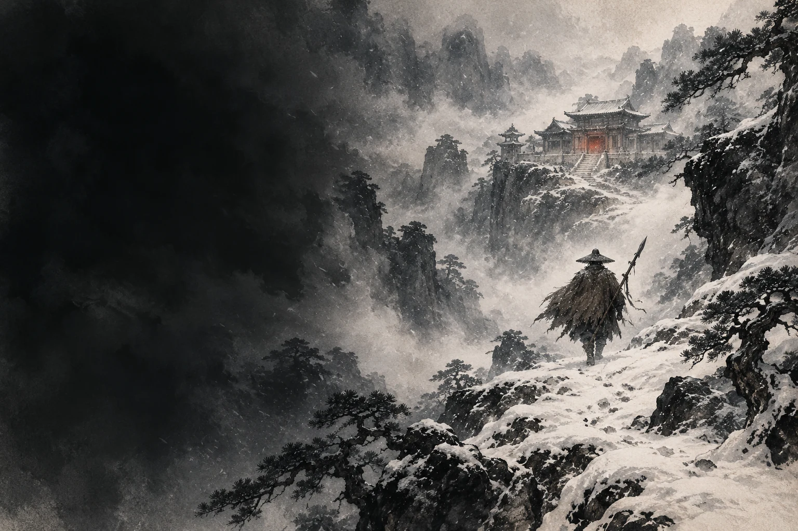
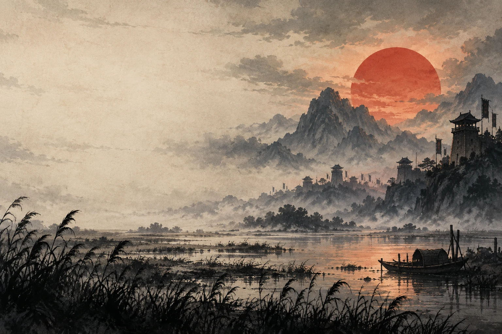

他本来，只想安稳地活。
八十万禁军枪棒教头，有家，有生计。林冲起初相信，退一步，总能换来一条活路。
替天行道，是理想，还是困局？

八十万禁军枪棒教头，有家，有生计。林冲起初相信，退一步，总能换来一条活路。
刺配沧州，草料场起火。山神庙的一扇门，把一场蓄意谋害与最后一丝侥幸隔开。
不是所有人都生来反叛。有的人，是被一步步推到了风雪里。林冲的转身，是整部书的一个缩影。
把刚才的故事，换一个角度听。
三段短导读，进入人物选择的背后。
从“安稳度日”到“雪夜上梁山”，看见一个人的心理转折。
十八碗酒后，武松独自上冈。那些被当作英雄气概的瞬间，也藏着年轻人的逞强。
老虎扑来，哨棒折断。传奇在拳头落下之前，先写出了一个人置身险境的本能。
别让“好汉”两个字，抹平人物的复杂。一次壮举能定义一个人吗？把问题带回书里。
不是背住标准答案。
而是把一个好问题，留给下一次阅读。
从人物选择读懂情节，
从情节回到自己的判断。
已掌握 0 / 6 张

教头、和尚、军官、渔民。身份不同，遭际不同，最终在同一片水泊里相逢。
三十六天罡，七十二地煞。一张座次表背后，是彼此扶助，也是秩序与权力。
有人盼招安，有人只愿快意。故事最值得读的地方，往往是“兄弟”之间的分歧。
选择一个人物，沿着关系重读。
六个入口，走进同一个复杂的世界。
从替天行道，到接受招安。
好汉们各自的选择，把“忠”与“义”带进了更难回答的问题。
没有标准答案。你的判断，值得回到原文验证。
刚才看见的是高光。
真正的人与江湖，还在字里行间。